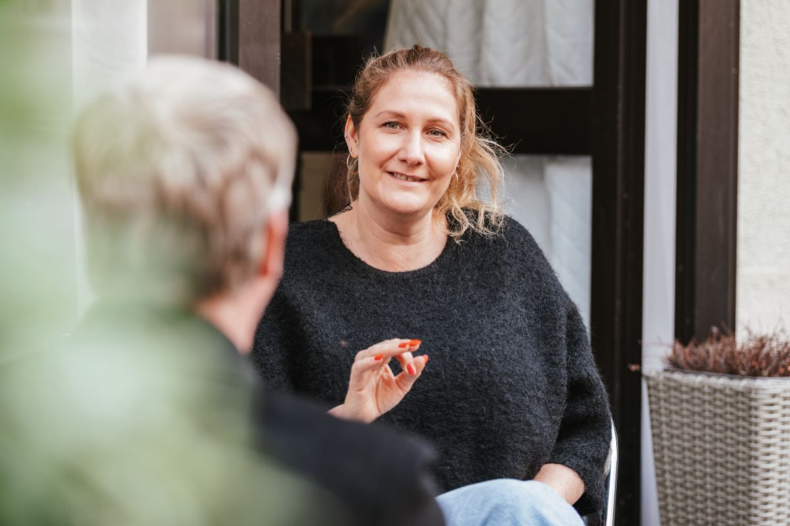

Speakerin
Impulse, die bewegen. Vorträge, die Veränderung ermöglichen.
Veränderung beginnt nicht mit neuen Methoden – sondern mit neuen Perspektiven. Als Keynote-Speakerin inspiriere ich Menschen dazu, mentale Stärke zu entwickeln, Veränderungen aktiv zu gestalten und ihr Potenzial bewusst zu entfalten. Meine Vorträge verbinden wissenschaftlich fundierte Erkenntnisse aus der Wirtschaftspsychologie mit praxisnahen Impulsen, persönlichen Erfahrungen und einer lebendigen, authentischen Art.
Ich spreche über Themen, die Unternehmen heute wirklich bewegen:
- Mental Health in der Arbeitswelt
- Resilienz und psychische Widerstandskraft
- Stressmanagement und gesunde Selbstführung
- Führung in Zeiten des Wandels
- Transformation erfolgreich gestalten
- Potenzialentwicklung von Menschen und Organisationen
- Zukunftskompetenzen für eine sich wandelnde Arbeitswelt
Ob auf Unternehmensveranstaltungen, Führungskräftetagungen, Konferenzen oder internen Events – mein Ziel ist es, Menschen nicht nur zu informieren, sondern zu inspirieren, neue Denkweisen anzustoßen und Veränderung nachhaltig in Bewegung zu bringen.

Transformation Facilitatorin
Transformation beginnt mit einer neuen Perspektive.
Transformation ist weit mehr als ein Change-Prozess. Sie bedeutet, Denkweisen zu verändern, neue Möglichkeiten zu erkennen und Menschen dabei zu unterstützen, ihre eigene Zukunft aktiv zu gestalten. Als Transformational Facilitator begleite ich Organisationen, Teams, Führungskräfte und Einzelpersonen in Entwicklungs- und Veränderungsprozessen. Dabei schaffe ich Räume, in denen Reflexion, Lernen und echte Entwicklung möglich werden.
Ich unterstütze Unternehmen dabei:
- Veränderungsprozesse wirksam zu begleiten
- Führung neu zu denken
- Zusammenarbeit zu stärken
- psychologische Sicherheit und Vertrauen zu fördern
- Resilienz auf individueller und organisationaler Ebene aufzubauen
- Potenziale sichtbar zu machen und nachhaltig zu entwickeln
Meine Arbeitsweise verbindet wissenschaftliche Erkenntnisse aus der Wirtschaftspsychologie mit systemischem Coaching, kreativen Methoden und modernen Facilitation-Techniken. Dadurch entstehen Prozesse, die Menschen nicht nur verstehen, sondern aktiv erleben – denn nachhaltige Veränderung entsteht dort, wo Erkenntnisse in Erfahrungen übergehen.
Trainerin
Lernen, das wirkt.
Als zertifizierte Trainerin konzipiere und begleite ich Seminare, Workshops und Entwicklungsprogramme für Unternehmen, Führungskräfte und Teams. Meine Trainings sind interaktiv, praxisnah und wissenschaftlich fundiert. Dabei geht es nicht um Frontalvorträge, sondern um nachhaltiges Lernen, persönliche Entwicklung und konkrete Werkzeuge für den Berufsalltag.
Themenschwerpunkte meiner Trainings sind unter anderem:
- Mental Health im Unternehmen
- Resilienz und mentale Stärke
- Stressmanagement und Selbstführung
- Führungskräfteentwicklung
- Gesunde & werteorientierte Führung
- Veränderungs- und Transformationskompetenz
- Potenzial- & Persönlichkeitsentwicklung
- Teamentwicklung
- Selbstreflexion und emotionale Intelligenz
Durch meine langjährige Tätigkeit als Personal- und Organisationsentwicklerin kenne ich die Herausforderungen moderner Unternehmen aus der Praxis. Deshalb verbinde ich wissenschaftliche Fundierung mit unmittelbarer Umsetzbarkeit – für Trainings, die nachhaltig wirken und Menschen wirklich weiterbringen.